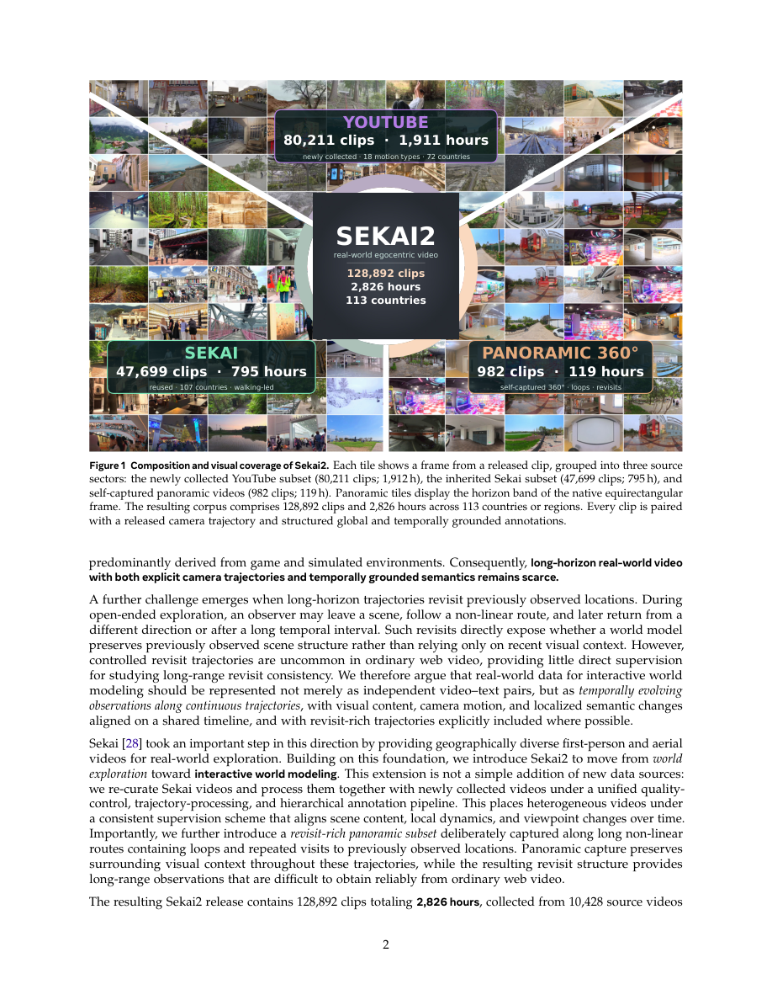

#1
★ 7/10
Sekai2: From World Exploration to Interactive World Modeling
Sekai2：从世界探索到交互式世界建模

图 Figure · Page 2 of paper
🎯 发布全球最大规模含相机轨迹与语义标注的真实世界探索视频数据集
A massive real-world video dataset with camera paths and rich annotations to power next-gen interactive world models.
🗣️ 一句话比喻 · Plain-English Analogy就像要训练一个会"脑补地图"的AI导游，你不能只给它看几张风景照——你得给它看完整的探索旅程视频，告诉它"摄像机往左转了30度"、"这棵树是静止的但那辆车在动"，还得让它多次路过同一个路口，从不同角度认清它。Sekai2就是这样一套超级详细的"AI导游培训教材"。Imagine training a robot tour guide: you can't just show it a few postcards — you need to take it on full walking tours around the world, tell it exactly which way the camera turned at every step, label what's moving vs. standing still, and loop back through the same plaza multiple times so it truly learns to recognize the place. Sekai2 is exactly that: the world's most detailed AI tour-guide training program, filmed across 113 countries.
| 维度 | 中文 | English |
|---|---|---|
| ❓ 待解决 的问题 |
训练AI"世界模型"（让AI理解场景如何随时间和视角变化）需要三样东西同时具备：长时间视频、摄像机运动轨迹、以及与时间对齐的文字描述。但现有数据集很难三者兼得：网上的海量视频没有轨迹信息，有轨迹的数据集又太短或只能用于三维重建。就像你想学做饭，但能找到的要么是只有食材清单没有步骤的菜谱，要么是只有几秒钟的短视频，根本不够用。 | Training AI "world models" — systems that understand how scenes change over time and from different viewpoints — requires three things at once: long videos, camera movement paths, and text descriptions tied to specific moments. Existing datasets almost never provide all three together. Web videos have variety but no camera data; datasets with camera data are too short or only meant for 3D reconstruction. It's like trying to learn to navigate a city but only having either a map without street names, or a few snapshot photos with no directions. |
| 💡 解决 的亮点 |
• 规模庞大且三要素齐全：128,892个视频片段，共2,826小时，覆盖全球113个国家/地区，每个片段都同时配有相机轨迹和分层语义标注，填补了领域空白。 • 专注"持续观察"：43,594个片段长达完整2分钟，占总时长51.4%，为AI学习长期场景记忆提供了关键素材。 • 独创全景回访序列：包含982个沿非线性轨迹拍摄的全景序列，包含环路和重复观察，让AI能学习到"同一地点在不同时间和角度下长什么样"，这对构建几何一致的世界模型至关重要。 | • Triple-complete at scale: 128,892 clips, 2,826 hours, 113 countries — every single clip comes with camera trajectory AND time-aligned text annotations, solving a long-standing data gap. • Long-duration focus: Over 43,000 clips run a full 2 minutes each, giving AI the extended footage it needs to learn how scenes evolve over time. • Panoramic revisit sequences: 982 special sequences where the camera loops back and revisits the same spots from different angles — teaching AI to recognize and remember places consistently, like a human explorer returning to a familiar landmark. |
| 🧪 实验 内容 |
论文对Sekai2数据集本身进行了语料库规模的分析实验，包括：姿态与字幕覆盖率验证、地理与语义多样性分析、相机轨迹多样性统计、以及时间描述冗余度评估。这些分析旨在证明数据集在规模、多样性和标注质量上优于现有同类数据集（如pose-annotated短视频数据集和无轨迹的网络视频语料库）。 | The paper conducts corpus-scale analyses of the Sekai2 dataset itself rather than downstream task benchmarks. Experiments cover: verifying 100% pose-and-caption coverage across all clips, measuring geographic and semantic diversity across the 113 countries, analyzing the variety of camera trajectory shapes and movements, and evaluating temporal description redundancy to ensure annotations are informative and non-repetitive. These analyses are compared against the landscape of existing datasets to position Sekai2's advantages. |
| 📊 实验 结果 |
• 128,892个视频片段，合计2,826小时，来自10,428个源视频，覆盖113个国家/地区。 • 43,594个片段达到完整120秒，占全部素材的51.4%。 • 共生成649,597个时间对齐的语义标注片段。 • 包含982个全景非线性轨迹序列（含环路与重访）。 • 实现了100%的姿态和字幕覆盖率，时间描述具有高度非冗余性。 • 相比现有数据集，在长时长、轨迹多样性和语义分层标注三个维度上同时领先。 | • 128,892 video clips totaling 2,826 hours from 10,428 source videos across 113 countries/regions. • 43,594 clips reach the full 120-second length, accounting for 51.4% of all footage. • 649,597 temporally grounded semantic annotation segments generated. • 982 panoramic sequences with non-linear, loop-and-revisit trajectories. • 100% pose-and-caption coverage across the entire corpus. • Highly non-redundant temporal descriptions confirmed by corpus-scale analysis, outperforming existing datasets on simultaneous coverage of long duration, trajectory diversity, and hierarchical semantic annotation. |
| 🏁 结论 | Sekai2证明了可以通过系统性采集和标注，构建一个同时具备长时视频、相机轨迹和时间对齐语义的大规模真实世界数据集，为训练下一代交互式世界模型提供了迄今为止最完整的数据基础。 | Sekai2 demonstrates that it is possible to build a large-scale, real-world video dataset that simultaneously provides long-duration footage, camera trajectories, and time-aligned semantics — giving the AI research community its most complete training resource yet for interactive world models. |
| 🔗 论文 链接 |
arXiv: 2608.09449v1 · 📥 PDF | |
⚙️ Method · 方法详解
Sekai2通过多源数据采集和精心设计的标注流程来解决问题。研究团队从全球10,428个源视频中采集世界探索类footage，统一切割为120秒片段，并为每个片段自动提取相机轨迹（摄像机怎么动的）。然后，他们用分层标注系统把每段视频拆解为四个维度：主体运动、环境动态、静态场景内容、以及相机行为，生成649,597个时间对齐的语义片段。特别地，他们还专门采集了982个全景序列，这些序列故意走"回头路"，让同一地点在不同时间和角度被重复拍到，为AI学习持久空间记忆提供监督信号。
The team gathered "world exploration" footage from 10,428 source videos shot across 113 countries, then sliced everything into 120-second clips. For each clip, they automatically extracted the camera trajectory — essentially a record of every move the camera made. They then applied a four-layer annotation system that separately tags subject motion, environmental changes, static scene details, and camera behavior, producing over 649,000 time-stamped text segments. On top of this, they specially collected 982 panoramic sequences where the camera deliberately loops back to revisit the same locations from new angles, giving the AI repeated views of the same place to build a consistent mental map.
🌟 Why It Matters · 为什么重要
世界模型是下一代AI的核心能力之一，支撑着自动驾驶、机器人导航、游戏AI和虚拟现实等众多应用。Sekai2提供的高质量数据集，将直接加速这些领域AI系统的研发，让机器更好地"理解世界、预测未来"。
World models are a key building block for next-generation AI in self-driving cars, robots, gaming, and virtual reality — any system that needs to understand and predict how the world changes. Sekai2 gives researchers the fuel (data) they've been missing to train these systems, potentially accelerating breakthroughs in autonomous navigation and immersive AI experiences.